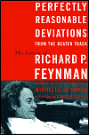
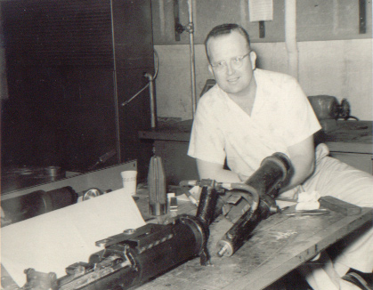

|  | Being a physicist, I must admit to idolizing Richard Feynman a bit. For those who have never heard of him, Feynman was something of a poster boy for 20th century American physics. He personified many of the qualities physicists strive for like honesty, creative thinking, curiousity, and a healthy disrespect for authority. He was also involved in most of the major historical events, including the development of the atomic bomb and the theory of quantum electrodynamics, for which he won the Nobel Prize. You can always get the attention of an audience of physicists with a Feynman anicdote. Having read all the biographies of Feynman including Mehra's technical one and several of Feynman's books I was excited to learn that his daughter Michelle was going to publish a collection of Feynman's correspondence this year. Naturally, I had to get it and read it as soon as it came out. |
Perhaps I should backpedal a bit and tell you that, while Feynman's physics books continue to sell well today, his children get none of that money. It all goes to Caltech, the institution Feynman worked at. While this never bothered Feynman as he considered himself well-paid, his children would quite reasonably like to cash in on their father's continuing popularity. Well, lawyers got involved and after about a decade the Feynman children won the rights to their father's papers. So, naturally, when I heard Michelle Feynman was publishing her father's letters in Perfectly Reasonable Deviations From the Beaten Track I wondered if it would be mostly things which already appear in other biographies. However it is not. This collection of letters gives wonderful insight into the piercing mind of Feynman.
Reading Feynman's letters I started to think of the one other mountain of correspondence I had plowed through in my life. About ten years ago I read my way through many a letter to and from Neal Wogsland, my grandfather, while working my way through his genealogy files. Those files have formed the basis for all of my genealogical work since, but, more importantly, they helped my to get to know my grandfather, who had died when I was a boy.
| Neal Wogsland was born in the small town of Nelsonville, Wisconsin in 1928. Growing up he developed an excellent analytic mind which he put to work becoming an engineer at the University of Wisconsin. He got drafted straight out of college, and put his analytic mind to work for the army. Eventually he became a civilian again, but didn't stop working for the army until he retired more than 30 years later. He married and had three children whom he loved. Neal would take his family back to the Wogsland farm in Wisconsin, but he never looked back much further until he got a letter from Melvin Voxland in 1977. Their correspondence, which would last more than a decade, set Neal's beautifully analytic mind toward the task of recording his family history. It's quite humerous to contrast Melvin's throwing around dates that he's not really sure about while Neal is concerned about the best way to store and present the data. I must admit to relating a little bit better to Neal, but we are more closely related (a pun he would have appreciated). |  |
When I was in high school and still something of a novice genealogist, I read much of Grandpa's meticulously stored correspondence - letters he'd received and photocopies of letters he'd sent. By reading Neal's letters I got to know a man who had died when I was twelve. I even revived one of his correspondences, with Ray Wogsland. As I read Feynman's letters I remembered how much those letters, little pieces of my grandfather, meant to me. I became determined to publish them. But my grandfather, however important he may be to me, was not a figure of world reknown. Such is the beauty of the internet - I can publish the correspondence of my grandfather so that anyone in the world can read it. So I went to those gray filing cabinets in Grandma's garage and began typing up those letters for all to read. The first installment is Neal's correspondence with Melvin Voxland, the one that started it all. As I finish typing up more sets of correspondence they will appear at the end of this site's genealogy index. Hopefully, I will complete the task by year's end.